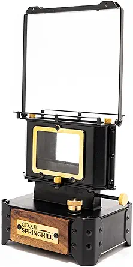

🔥 Goout Stove: The Bug-Out Cook King
When the blackout hit, it was over 100°F outside. No power, no AC, and the house was already a damn oven. My little girl was sweating bullets, my wife looked worn down, and I knew I had to figure something out — fast.
I grabbed the Goout Stove from my emergency kit, set it up outside on a cinderblock, and got to work. I boiled water for instant coffee, fried up some gooey grilled cheese sandwiches, and even simmered powdered cheddar into a creamy mess that actually hit the spot. This thing earned its place in my gear stash that day.

🔥 Goout Stove – Portable Propane Burner
Lightweight. Reliable. No batteries, no nonsense. This propane stove cranked out heat like a champ even with wind gusts kicking up. Works with most mini canisters.
✅ Real grit-tested.
✅ Heats fast. ✅ Easy to store. ✅ Built for survival bags.
Powdered Cheddar — the Underrated MVP
You ever try powdered cheese? I used to clown it — till I tried this stuff with just hot water and a little oil. Mixed into noodles or drizzled on toast, it hits different when you’re hungry and sweating bullets. Zero fridge required. Shelf-stable and cheap.
🧀 Hoosier Hill Farm Powdered Cheddar Cheese
Long shelf life. Surprisingly good. Makes killer mac & cheese or grilled cheese sauce in a pinch.
🛒 Buy the Goout Stove on Amazon 🛒 Buy the Goout Stove on AmazonWho’s This Stove For?
- ✅ Preppers building a real bug-out bag
- ✅ Families who want off-grid backup cooking
- ✅ Campers, RV folks, and weekend warriors
- ✅ Anyone sick of overpriced, fragile camping gear
Who Should Skip It?
- ❌ Apartment dwellers with zero outdoor space
- ❌ Hardcore ultralight backpackers (there are lighter ones)
Bottom Line
This stove isn’t a gimmick. It’s not flashy. But it works. And when everything else fails, that’s all that matters. I’ll never forget the smell of hot grilled cheese and powdered cheddar while the rest of the block sat in silence with nothing warm to eat. It was small comfort — but it kept us going.
If you’re serious about your gear, don’t skip this one.